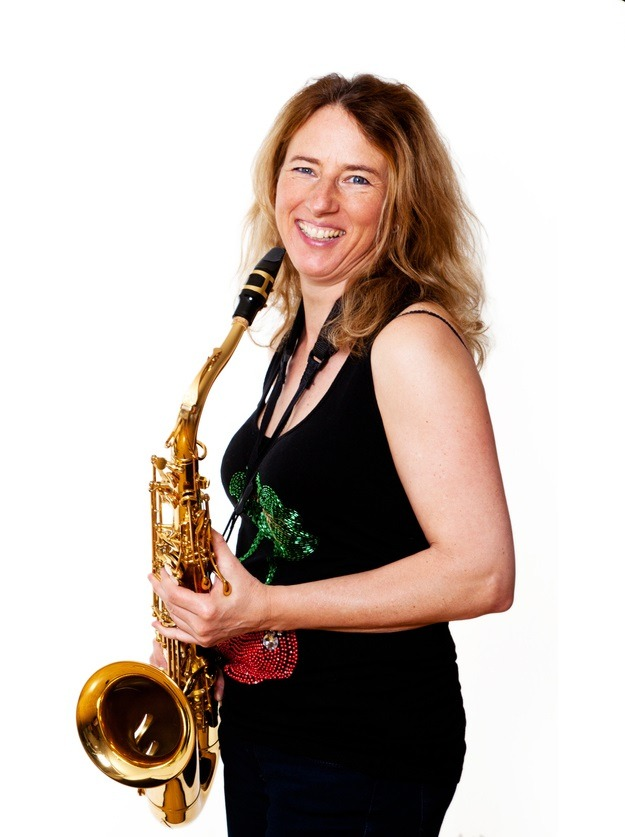

Hannah
docent Muziek
Hannah is een vrolijke, goedlachse vrouw van 39 jaar. Ze is de vriendin van Jesse. Hannah is al van jongs af aan geïnteresseerd in veel verschillende muziekstijlen. Haar ouders hebben het met de paplepel ingegoten. Langzamerhand werd de trompet echter haar favoriete instrument. Ze speelde op school en had al jong optredens in buurthuizen, op braderieën, enzovoorts.
Hannah volgde zelf vanaf haar zesde jaar les op de muziekschool. Vanwege haar talent kreeg zij later privéles. Op de middelbare school besteedde ze veel aandacht aan haar studie en de muziek schoot er een beetje bij in. Maar toen ze haar diploma had behaald, was het conservatorium een logische keus. Ook op het conservatorium viel haar talent op. Ze werd gevraagd voor het studentenorkest en speelde in haar vrije in een jazzband. Daar ontmoette zij Jesse. Gedurende haar studietijd kwamen medestudenten regelmatig naar haar toe met het verzoek om hulp. Dat waren niet alleen trompetstudenten, maar ook studenten die andere blaasinstrumenten bespeelden. Hannah merkte dat bijles geven haar heel goed afging en dat ze het ontzettend leuk vond.
Toen Jesse met het idee kwam om samen een muziekschool te beginnen, hoefde Hannah niet lang na te denken. Het was dé manier om van haar hobby haar beroep te maken en om muziek maken te combineren met lesgeven. Bij Hannah zijn jong en oud in goede handen!